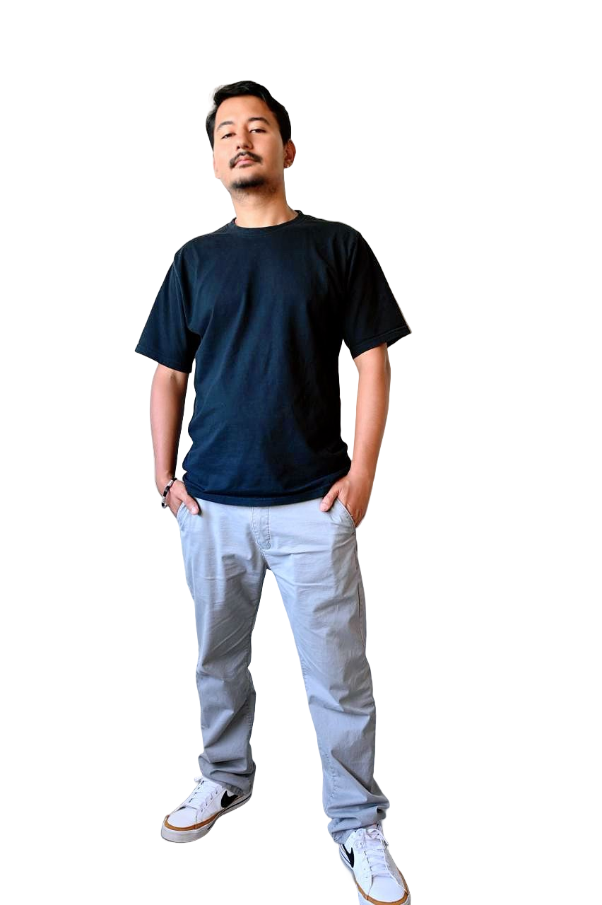

Product designer focused on clarity, structure, and real-world product logic.
I design digital products that help people move through complex environments with more confidence. My work spans marketplaces, service platforms, internal tools, and research-driven systems — built at the intersection of UX craft, business logic, and technical collaboration.
I come from a Computer Science background, which means I think about implementation early, collaborate closely with engineers, and design systems that are actually buildable. I'm currently completing my MA in Human Experience Design Interaction at CSULB while staying active in product work.

What I bring
CORE COMPETENCIES
Product Thinking
Defining the 'why' before the 'how'. I bridge the gap between business objectives and user needs through rigorous strategy.
Systems & Flow Design
Designing the skeletal structure of complex apps. I build scalable design systems and foolproof user flows.
Technical Collaboration
Coming from a CS background, I speak the language of engineering. I design with implementation and performance in mind.
Business-Aware Design
I measure success by conversion, retention, and growth metrics. Design is a tool for achieving commercial results.
RECOGNITION
Startup World Cup — Inksvilla
ACADEMIC
MA Thesis — Navmate
SCOPE
End-to-End Product Architecture
Experience snapshot
My career has been defined by a constant balance between user-centric usability and the cold, technical realities of software development.
Product Designer
Beehive Technologies
2021 – 2024
UX Designer
Audio Bee
2021
UI Designer
Bigfoot Infotech
2020 – 2021
I treat AI as a cognitive force-multiplier.
I use tools like Stitch, Gemini, and ChatGPT to speed up ideation, stress-test product logic, and explore interface directions at the speed of thought. They accelerate the work — they don't replace the judgment behind it.
Outside of work
Cross-cultural experiences and travel shape how I think about design. Growing up in Pokhara, Nepal and now working in Los Angeles gives me a genuine perspective on products that help people navigate unfamiliar systems — which turns out to be most products worth designing.